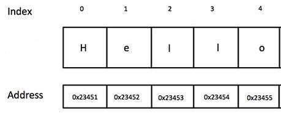

Strings are secretly collections of letters stored at sequential memory addresses.
We can access each letter using square brackets and a zero-indexed number. Try typing out each of the following for yourself, using your own values and variable names:
var word = "Hello"
word[0]
word[1]
word[4]
word[5]
var index = 3
word[index]
// strings have a length property
var len = word.length
word[len]
word[len - 1]Works for larger strings too.
var greeting = "Hello and welcome to my webpage!"
greeting[0]
greeting[1]
greeting[28]
greeting[29]
var index = 2
greeting[index]
var len = greeting.length
greeting[len]
greeting[len - 1]Sometimes we want collections of items more complex than single letters. Here's a collection of numbers contained in a data structure of type array- a data type defined at the language-level by JavaScript.
var numbers = [99, -5, 82, 65, 39 120, 431, 98, 17, 42]
var nums = [5, 10, 20, 50, 100, 250]
nums[0]
nums[1]
nums[5]
nums[6]
var index = 4
nums[index]
var len = nums.length
nums[len]
nums[len - 1]An array of strings:
var words = ["Hello", "and", "welcome", "to", "my", "webpage!"]
words[0]
words[1]
words[5]
words[6]
var the_number_three = 3
words[the_number_three]
var len = words.length
words[len]
words[len - 1]Arrays can hold all kinds of stuff:
var all_kinds_of_stuff = ["Hello", 3, undefined, true, ["woah", "dude"], null]
all_kinds_of_stuff[0]
all_kinds_of_stuff[1]
all_kinds_of_stuff[5]
all_kinds_of_stuff[6]
var another_array = all_kinds_of_stuff[4]
// ?
another_array[0]
// ?
all_kinds_of_stuff[4][1]Okay, now we've seen some arrays, let's create a few of our own.
// creating a new instance of an array is called instantiation
var arr = []
// we can use bracket access in conjunction w/ the assignment operator
// to store a new value at that index
arr[0] = "0 is the new 1"
arr[1] = 45
arr[2] = null
arr[3] = true
arr[1] = "overwrite 45, just forget about that one, okay?"Exercise: Favorite Recipe
recipelast_step and assign to it a number which represents the index of the last item of your arraylast_step variableArrays have associated with them some properties, like .length, and methods, like .push(), to help us use our collections more effectively.
var arr = ['stuff', 'more stuff', 'even more stuff']
arr.length
arr.push("More on the end!!!")
var lastItem = words.pop()
arr.unshift("More at the beginning!!")
var firstItem = words.shift()Exercise: Bucket List
bucket_list.push() two goals onto the end of your list..unshift() two goals onto the beginning..pop() off one goal and save it to a variable dying_wish.shift() off one goal and save it to a variable do_it_nowOften we want to consider every element in the array in turn.
var i = 0
while (i < words.length) {
console.log(words[i])
i++
}Exercise:
append_strings that takes an array as an input (argument)append_strings twice, passing in recipe the first time and bucket_list the second timeappend_strings such that it takes two arguments: an array of strings, and a string representing the CSS selector of the element into which the strings should be appended. (i.e. bucket_list may be appended into a #bucket_output div)var str = "one two three"
var arr = str.split(' ')
var new_str = arr.join(' and a ')
// now our turn...
var scrambled_poem = "roses red are bacon crispy i bacon love and is blue violets are"Exercise:
.split(' ') on scrambled_poem and save the result as an array scrambled_arrayunscrambled_arrayscrambled_array is greater than 0, remove the FIRST and LAST value and store add them to unscrambled_array.unscrambled_poem into a string by using the array's native .join(' ') method.We do this type of iteration so often, that JavaScript provides us a special kind of loop- the for loop.
for (var i = 0; i < words.length; i++) {
console.log(words[i])
}Exercise:
reverser which will take an array of values as an input and return a new array of the same values in reverse order.reverser instantiate a new array reversed_array, use a for loop to populate it, then return it from the function.Often it's cleaner to use Array's native .forEach() method to run a given function once for each item in the array, passing that item in as an argument
var log_me = function(word){
console.log(word)
}
words.forEach(log_me)Exercise: Refactor your append_strings function to use .forEach() instead of a while loop.
Exercise: Write a function biggest_smallest that takes an array of numbers as an input, uses .forEach(), and returns an array containing the smallest number in the zeroth position and the largest number in the first position.
Arrays are pass by reference, this means when you do the following, you get two arrays pointing at the same object in memory. This can lead to the unexpected results
var arr2 = arr
arr2.pop() // both arr and arr2 are changed!!
var arr3 = arr.slice() // clones the array
arr3.pop() // only arr3 is changedExericise: Create a function array_duplicator, that takes an array as an input, and returns a copy as the output.
var array_duplicator = function(inputArray) {
var outputArray = []
// code here
return outputArray
};
var original = [1, 2, 3, 4]
var duplicated = array_duplicator(original)
duplicated.pop()
duplicated.pop()
duplicated.pop()
console.log(original, duplicated) // should not be the same!.concat() is short for concatinate. It smooshes two arrays together.
var friends = ['ada', 'will', 'bianca', 'abe']
var enemies = ['john', 'alice']
var frenemies = friends.concat(enemies)
console.log(frenemies)
console.log(friends, enemies) // does not change original arrays!Exericise: Write a function array_combiner that takes two arrays as inputs and returns the two of them smooshed together as an output
var array_combiner = function(array1, array2) {}
var combined_array = array_combiner([1, 2, 3], [4, 5, 6])
console.log(combined_array).splice() is another confusing one. It destructively removes a number of elements from an array starting at a particular index.
var frenemies = ['ada', 'will', 'bianca', 'abe', 'john', 'alice']
var starting_at_index = 3
var number_to_remove = 2
var removed_elements = frenemies.splice(starting_at_index, number_to_remove);
console.log("We took out ", removed_elements)
console.log("The remaining array ", frenemies)Exercise: Write a function array_plucker that takes an array and an index as inputs and destructively removes the single value at that index. Return that value.
var array_plucker = function(array1, index_to_remove) {
var removed_value
// code here
return removed_value
}
var days_of_school = ['Monday', 'Tuesday', 'Wednesday', 'Thursday', 'Friday']
var day_off = array_plucker(days_of_school, 4)
console.log("I'll go to school on: ", days_of_school)
console.log("but I'm taking vaction on ", day_off)var rand = Math.floor( Math.random() * words.length )
words[rand]Exercise: Shuffler Create a function shuffler that takes an array as input and returns a new array of the same elements in a random order. Is your shuffle perfectly mathematically random or only pseudo-random? How computationally efficient is it- i.e. how many lines of code need to be run?
sum_array that takes an array of numbers and returns the sum of all of those numbers added together.array_math that takes an array of numbers and a string with a mathmatical operator and applies that operator to all the numbers together. array_math([4,2,3], "*") should return 24zipper function that combines two arrays in alternating order, zipper([1,2,3],['a','b','c']) should return [1, 'a', 2, 'b', 3, 'c']. Make sure to handle cases where one array is longer than the other.merge_sorted([1, 2, 5, 9], [3, 7, 19]) should return [1, 2, 3, 5, 7, 9, 19]words.join(' ') to create a string and show it.var arr = [52, 27,31]
// pass by reference
arr2 = arr
arr2.push(44)
arr[0] = "new value"
// why?
console.log(arr, arr2)
// what does slice do?
arr2 = arr.slice()
arr2.push(44)
arr[0] = "new value"
// why?
console.log(arr, arr2)
var arr = [ ['hello', 'and', 'hi'], [2,3,4] ]
arr2 = arr.slice()
arr2[1].push(44)
arr[0] = "new value"
// ?
console.log(arr, arr2)var array_of_functions = [ function(){ console.log('hi') }, function(){ console.log('bye') } ]
array_of_functions.push(function(val1){ console.log(val1 * 2) })
var adder = function(val1, val2){ console.log(val1 + val2) }
array_of_functions[3] = adder
array_of_functions.forEach(function(func){
func(3,4)
})// Reimplementing JavaScript Array's native .forEach() method is rather trivial
var my_each = function (array, iterator) {
for (var i = 0; i < array.length; i++){
iterator( array[i], i )
}
}
my_each(some_array, some_function)